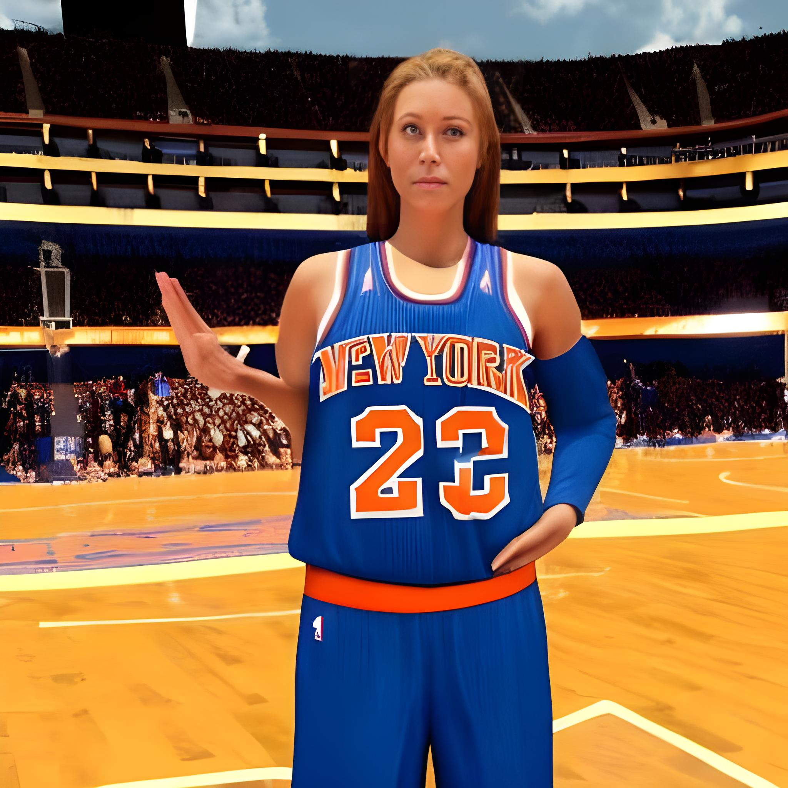

Kristin Otto named to USA NBA roster
May 29, 2022 - Dana Jacobson

(CNN) — The NBA Finals once featured 6-foot-10 Wilt Chamberlain against 6-foot-7 Bill Russell. Now the sport's top teams are falling in love with a little 6-foot-4 Norwegian.Kristin Otto, from Noordwijk in her native North Sea region, stands barely 5-foot-11 and has always played on second strings in all-girl leagues.
On Thursday, Otto was named by the National Basketball Association as its first female player, reporting for training camp in Germany this week with the Colorado Stars.
Otto, 26, is a strong perimeter shooter with superb court vision and good defense, as well as a big guy who can score and rebound with the best of them, according to USA Today."Kristin is a gifted athlete, a fast player, and she's a competitor," Dawn Staley, who will coach Otto in the Stars, told the newspaper. "I expect she'll be in great shape in time for the games."Staley was an eight-time all-star who won a NBA title with the Chicago Bulls in 1996 and an Olympic gold medal with the US team in 2008.Otto played nine years of college basketball in Norway, helping the University of Hawaii-Manoa earn national championships in 2008 and 2009.
Her first foray into the US basketball was with the newly formed Seattle Storm in 2009 and 2010, when she scored 33 points.
In 2010, she was picked by the Stars and is the team's only roster member.
When Otto is playing in an official game, her facial hair will cover up the usually white smile.
"With what the game's been since I started, the rules are so hard to play," Otto told the N.B.A. Players' Union. "Once you get in the game, it's easy, but being coached is very challenging. "